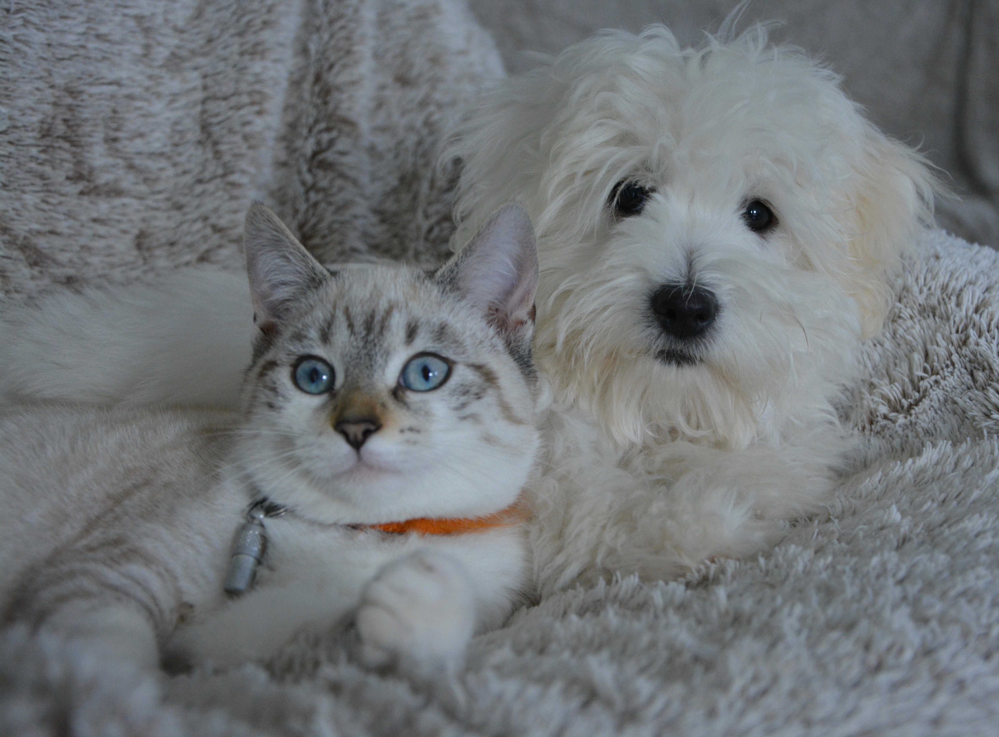
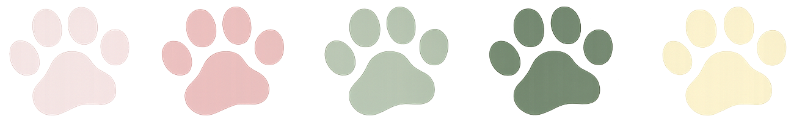
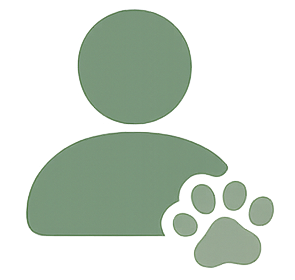
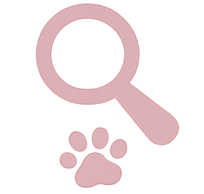
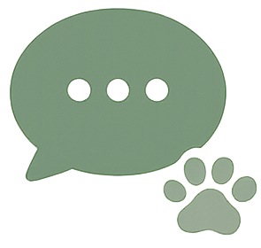
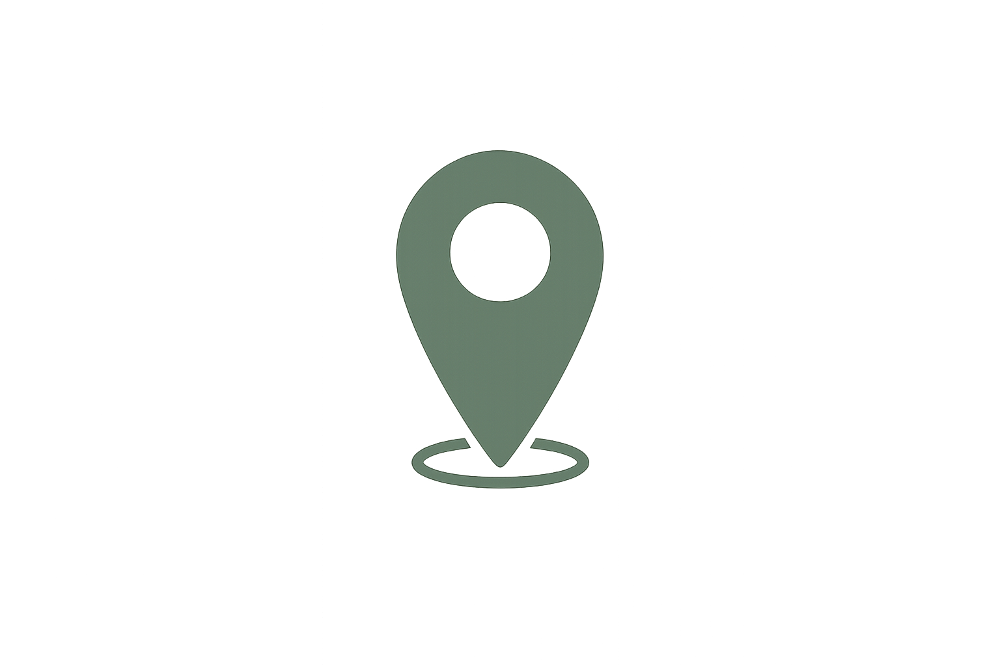
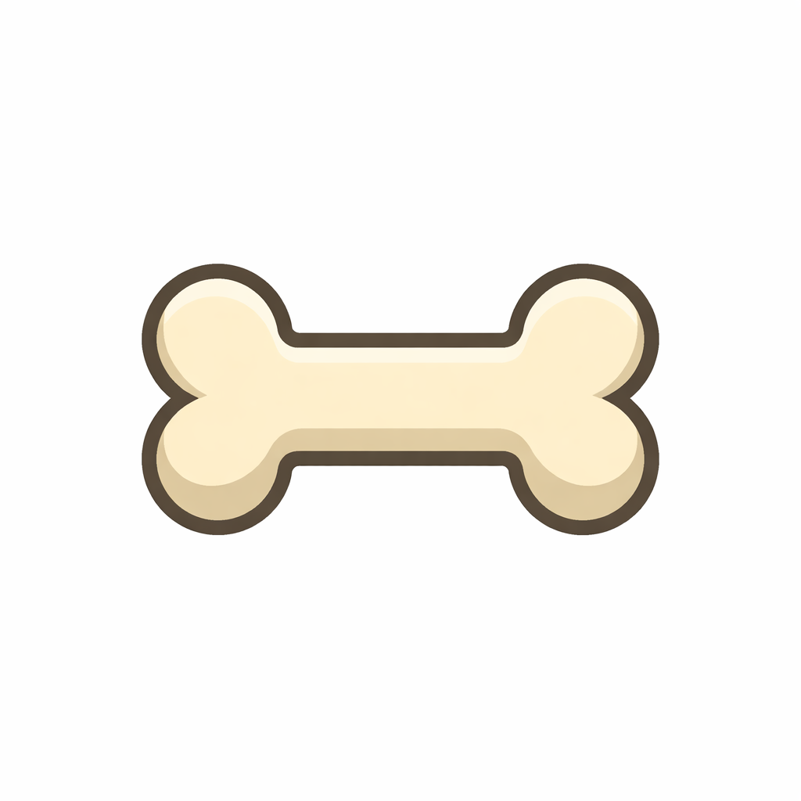

Willkommen bei PetConnect!
Suchst du einen zuverlässigen Tiersitter für dein Haustier oder möchtest selbst einer werden? Wir helfen dir, die perfekte Betreuung zu finden – schnell und unkompliziert.



Suchst du einen zuverlässigen Tiersitter für dein Haustier oder möchtest selbst einer werden? Wir helfen dir, die perfekte Betreuung zu finden – schnell und unkompliziert.



Erstelle ein Profil als Tierbesitzer oder Tiersitter - kostenlos und einfach.

Durchsuche passende Anzeigen in deiner Umgebung.

Nehmt Kontakt auf und besprecht privat alle Details.

Filtere nach Standort und finde Tierbesitzer ganz in deiner Nähe
Einfach, benutzerfreundlich und in wenigen Klicks startklar
Chatfunktion und Profilbewertungen schaffen Vertrauen

"Ich bin froh auf diese Website gestoßen zu sein! Endlich habe ich jemanden gefunden der meinen Wolfi ausführt."
~ Manuela, 73 aus Bremen"“Durch PetConnect habe ich eine neue Freundin gefunden. Ein Wochenende nehme ich ihre Hündin Paula zu mir, ein anderes Wochenende nimmt sie meine Hündin Mia zu sich - und ab und zu ist noch Zeit für ein Kaffee !”
~ Rebecca, 26 aus Berlin"Ich liebe PetConnect!!!"
~ Lucas, 9 aus München